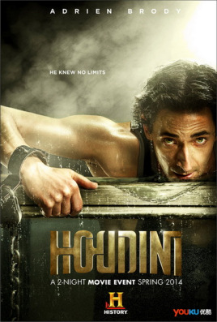
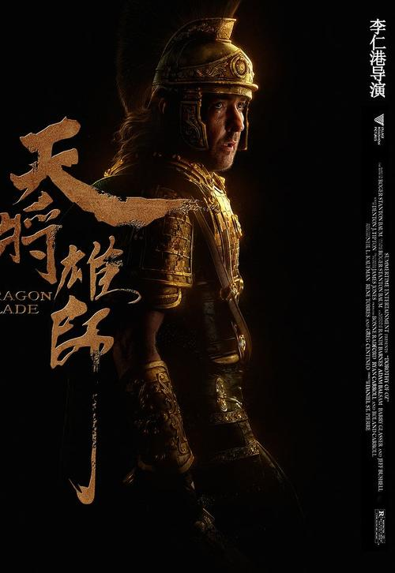
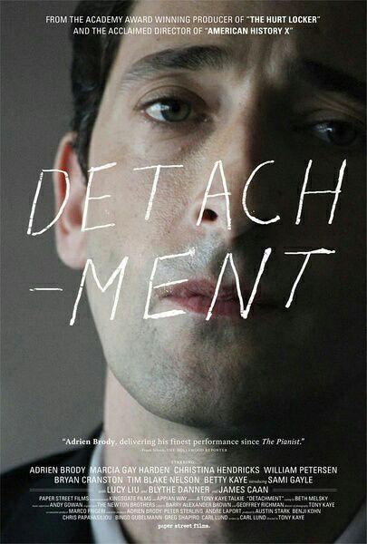
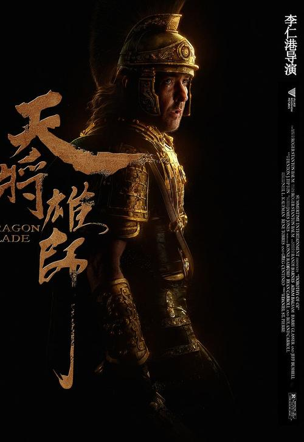
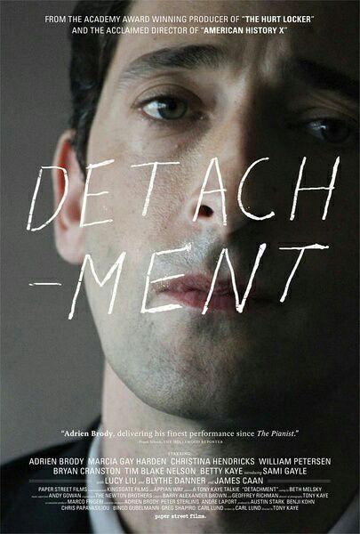

Adrian Brody
April 14, 1973 New York, New York, United States
In 1988, she starred in her first TV series Home at Last.In 1993, she starred in the feature film "King of the Hill".In 1998, he was nominated for the best actor award at the 16th Independent Spirit Awards for his role in the drama Restaurant.In 2003, he won the Best Actor Award at the 75th Academy Award and the Best Actor Award at the 28th French Cesar Award for his role in the drama "The Pianist".In 2004, he starred in the thriller "The Secret Village", for which he was shortlisted for the best supporting actor award at the Italian Online Film Awards.In 2005, she starred in the action film King Kong.
In 2008, she starred in the musical "The Legend of the Blues".In 2009, she starred in the crime film Lead Yellow.In 2010, the thriller Death Experiment was released in the United States.In 2014, he starred in the biographical drama "Houdini", for which he was nominated for the 21st Screen Actors Guild Award for Outstanding Actor in a Miniseries or TV Movie, and the 67th Emmy Awards for Outstanding Actor in a Limited Series or TV Movie.In 2015, he won the Best Supporting Actor award at the 16th Huading Awards for his role in the costume action film Heavymaster.In 2016, she starred in the war movie "Bombardment".In 2020, he will star in romantic comedy "The Special France."。
Representative works


 


